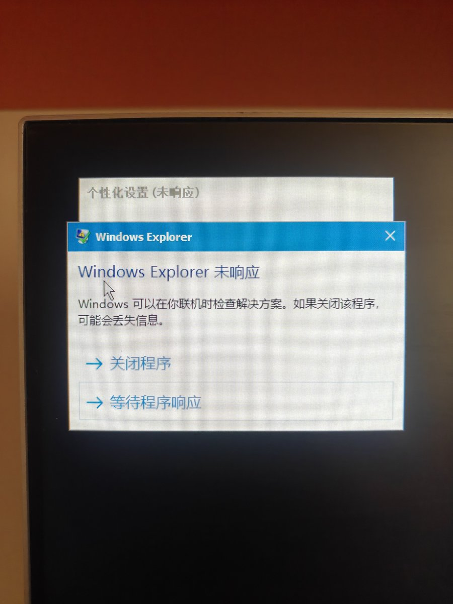

櫻川由奈🏳️⚧️Sakura🍥
@Xiaoyi_0324
今天我的PEu盘炸了…
所以我想着自制一个pe系统
原因其实是其他第三方的要么有广告 要么没有适合自己的功能 所以打算自己做
最开始先是搜了B站 也没找到教程…
于是就和ai开始讨论 自己学 忙了三个小时 终于构建打包了镜像
想着先用虚拟机测试一下 结果打开就卡在了System configuration,Place Wait...
后面抱着一点侥幸心理 又学习了怎么把ISO刻录到U盘 想着用实体机试试
好不容易等到个性化设置 结果不但卡半天 鼠标一点就未响应🥹
历经千辛万苦打包的镜像 最终竹篮打水一场空😭
我再也不会尝试自己构建PE了 气死我了
✝️
